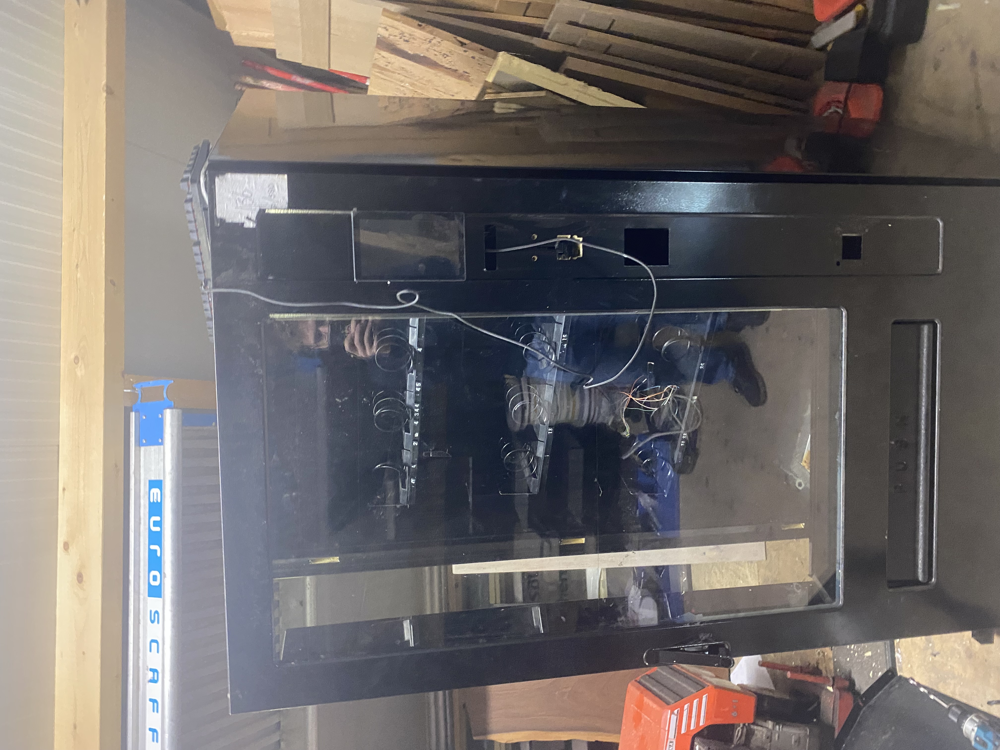

Our Business Model
Each year, countless packages and items go unclaimed, returned, or left unused for a variety of reasons — wrong addresses, failed deliveries, or simply forgotten orders. Rather than letting these items go to waste, Name steps in to give them a second life. Our approach goes beyond just redistributing packages — it’s about creating a sustainable system that benefits everyone: the environment, logistics partners, and curious customers alike.
We work closely with delivery companies, and other partners to collect items that would otherwise be discarded. Each parcel is anonamized and prepared for the consumer market. By placing them in our network of automated vending machines, we not only prevent waste but also create a unique experience for our customers — every purchase is a surprise, sparking curiosity and excitement.
Our model is built on the principles of sustainability, efficiency, and innovation. Every unclaimed or undelivered item represents an opportunity — an opportunity to reduce waste, to delight someone with a mystery product, and to demonstrate that even things that might seem forgotten can have value. Through this approach, Name is helping to redefine how we think about unused or overlooked items, turning them into meaningful experiences for people while making a positive impact on the planet.
1. We Collect
We acquire undelivered items that are legally cleared for resale, preventing unnecessary waste.
2. We Restock
Each parcel is repackaged and placed in vending machines across public locations and transportation hubs.
3. You Discover
Customers purchase a mystery parcel — every purchase supports sustainability and circular reuse.
Our Story
The idea for Name came from a simple question — what happens to all the undelivered mail that never finds its way home?
After learning that much of it is destroyed, we wanted to create a system that benefits everyone: logistics companies, the environment, and curious customers.
Our journey began with the vending machines themselves. Since many vending machines rely on proprietary technology produced by only a few companies, we decided to explore open-source alternatives. Everything is now designed and built in-house! Our software is fully open-source and can be found here:
VendOS on GitHub.
The machines are built using simple, user-friendly electronics that are easy to repair. This approach allowed us to create vending machines that are both affordable and maintainable. Our very first machine was second-hand, with all its electronics replaced to meet our standards.

The development of the first machine
What began as an experimental concept has grown into a sustainable model, combining recycling, innovation, and a touch of mystery.
Every vending machine represents a small step toward a more circular economy — and a fun surprise for anyone who participates.
Looking for Locations
Name is actively seeking new locations to place our vending machines. We are looking for spaces with good foot traffic such as offices, universities, transportation hubs, retail areas, and community centers. Partnering with us gives you the opportunity to be part of an innovative, sustainable project while offering something unique and exciting to your visitors.
If you have a space that could host one of our machines, we’d love to hear from you. Let’s work together to bring sustainability, curiosity, and convenience to your location.